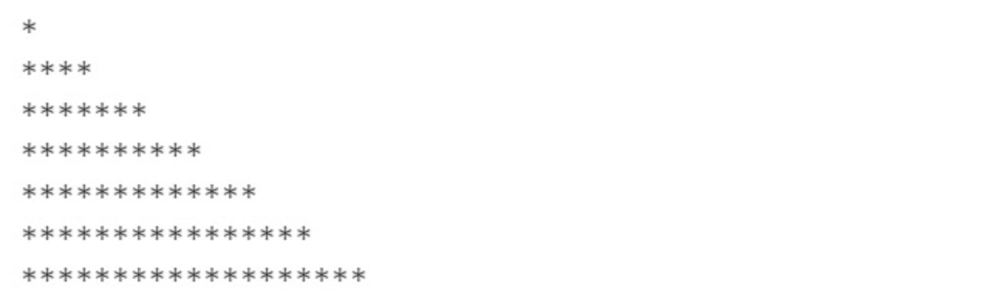
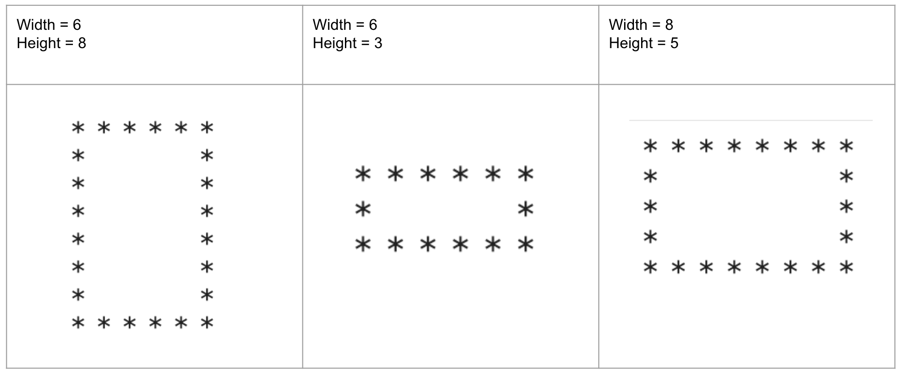
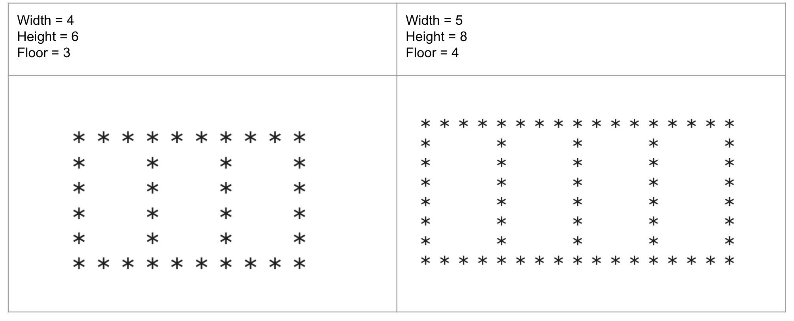
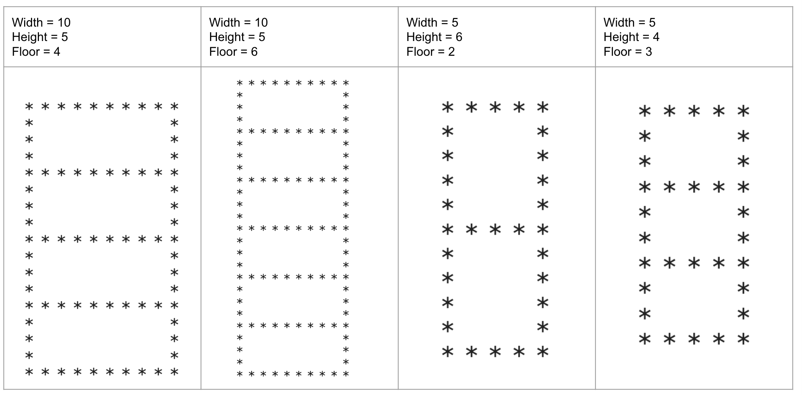

Iterations Code#
Please solve the following questions using Python code.
Question#
Using only one for loop and one print() function, display the following triangle.

Solution
for i in range(1,20,3):
print(i*'*')
Question#
Find the sum of the squares of the following numbers in two different ways: \(3, 7, 11, 15, 19, 23, \ldots, 107\).
Use a for loop.
Use a while loop.
Solution
Show code cell content
# for loop
total_for = 0
for i in range(3,108,4):
total_for += i**2
# while loop
total_while = 0
n= 3
while n < 108:
total_while += n**2
n += 4
print(f'for loop answer: {total_for}')
print(f'while loop answer: {total_while}')
for loop answer: 107883
while loop answer: 107883
Question#
Write a program that asks the user to enter integers until the sum of the given integers exceeds 100.
Display the sum and count of the entered numbers.
Use a while loop.
Solution
total = 0
count = 0
while total < 100:
number = int(input('Enter an integer: '))
total += number
count += 1
print(f'Sum = {total}, Count = {count}')
Sample Output
Enter an integer: 3
Enter an integer: 90
Enter an integer: 6
Enter an integer: 10
<——————–>
Sum = 109, Count = 4
Question#
Find the following product using a for loop and round the final answer to the nearest hundredth.
\(\displaystyle \frac{10}{100}\frac{90}{99}\frac{89}{98}\frac{88}{97}\frac{87}{96}\frac{86}{95}\frac{85}{94}\frac{84}{93}\)
Solution
Show code cell content
product = 10/100
for i in range(7):
product *= (90-i)/(99-i)
print(f'Product: {round(product,2)}')
Product: 0.05
Question#
Write a program that displays a rectangle using the characters * and ' ' (space).
The rectangle has width many
*characters on its upper and lower sides.The rectangle has length many
*characters on its left and right sides.There is a
' 'space character between the*characters.

Solution
# use the following variables
width, height = 8, 5
Show code cell content
for i in range(height):
if (i!=0) and (i!=height-1):
print('*'+(' '*(2*width-3)+'*'))
else:
print('* ' * width)
* * * * * * * *
* *
* *
* *
* * * * * * * *
Question#
Write a program that displays a wide, one-floor building using the characters * and ' ' (space).
The building consists of room many rectangles, each with a size of width by height, stacked horizontally.
Some examples are as follows:

Solution
# use the following variables
width, height, room = 4, 6, 10
Show code cell content
for i in range(height):
if (i != 0) and (i != height-1):
print('*'+(' '*(2*width-3)+'*')*room)
else:
print('* ' * ((width-1) * room+1))
* * * * * * * * * * * * * * * * * * * * * * * * * * * * * * *
* * * * * * * * * * *
* * * * * * * * * * *
* * * * * * * * * * *
* * * * * * * * * * *
* * * * * * * * * * * * * * * * * * * * * * * * * * * * * * *
Question#
Write a program that displays a tall building using the characters * and ' ' (space).
The building consists of floor many rectangles, each with a size of width by height, stacked vertically.
Some examples are as follows:

Solution
# use the following variables
width, height, floor = 5, 6, 2
Show code cell content
for i in range(floor*(height-1)+1):
if i%(height-1) == 0:
print('* ' * width)
else:
print('*' +' '*(2*width-3)+'*')
* * * * *
* *
* *
* *
* *
* * * * *
* *
* *
* *
* *
* * * * *
Question#
Find the sum of the first \(1000\) terms of the following sequence:
\(\displaystyle \frac{1}{1\times 2}, \frac{1}{2\times 3}, \frac{1}{3\times 4}, \frac{1}{4\times 5}, ...\)
Solution
Show code cell content
total = 0
for i in range(1, 1001):
total += 1/(i*(i+1))
print(total)
0.9990009990009997
Question#
Write a program that prompts the user to enter any text, which may include characters such as digits and punctuations.
Find the number of alphabet characters (a-z) in the given string.
You can use the constant ascii_letters from the string module to access all lowercase and uppercase alphabet letters.
Example:
Enter a string: Wer34
There are 3 alphabet letters in Wer34.
Solution
import string
text = input('Enter a text: ')
count = 0
for i in text:
if i in string.ascii_letters:
count += 1
print(f'There are {count} alphabet letters in {text}')
Sample Output
Enter a string: sD12&
There are 2 alphabet letters in sD12&
Question#
Write a program that generates a random word with 5 characters using lowercase alphabet letters.
You can use random.choice() to randomly choose a letter.
The generated word does not have to be meaningful.
Solution
Show code cell content
import string
import random
random_word = ''
for i in range(5):
random_word += random.choice(string.ascii_lowercase)
print(f'Randomly generated word: {random_word}')
Randomly generated word: butgw
Question#
Write a program that prompts the user to enter an integer.
Find the number of zeroes at the end of the given number.
Use a while loop.”
Example:
Input: 1234500 —-> Output: 2
Solution-1
number = int(input('Enter an integer: '))
count = 0
n = number
while n%10 == 0:
count += 1
n /= 10
print(f'There are {count} zeroes at the end of {number}.')
Sample Output
Enter an integer: 278140000000000
There are 10 zeroes at the end of 278140000000000.
Solution-2
number = input('Enter an integer: ')
count = 0
i = -1
while number[i] == '0':
count += 1
i -= 1
print(f'There are {count} zeroes at the end of {number}.')
Sample Output
Enter an integer: 278140000000000
There are 10 zeroes at the end of 278140000000000.
Question#
Write a program that selects a 3-digit random number (dividend) and a 1-digit random number (divisor).
After 10 seconds, display the remainder and quotient.
Use random.randint() to generate random integers.
Solution
import random
import time
divisor = random.randint(1,9)
dividend = random.randint(100,999)
print(f'Divide {dividend} by {divisor}')
time.sleep(10)
print(f'Quotient : {dividend//divisor}')
print(f'Remainder : {dividend%divisor}')
Sample Output
Divide 495 by 4
Quotient : 123
Remainder : 3